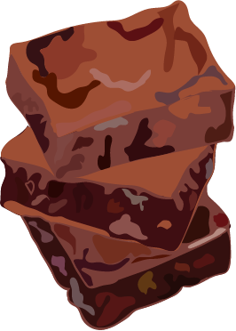

Gezonde brownie maken:
Bij de Ceuvel eet je duurzaam en gezond. Alles op het menu is plantaardig, waaronder ook de snacks die ze op de kaart hebben staan. De meeste mensen houden wel van brownies, maar vaak zitten ze bom vol suiker, dus waarom niet een brownie maken die gezond is?
Benodigheden:
100gram pure chocolade (minstens 75% cacao)
150 gram dadelpasta
100 gram amandelmeel
50 gram cacoapoeder
2 rijpe bananen (voor de zoete smaak)
een kom (om alles in te mengen)
een bakvorm
Olie of boter om de bakvorm mee in te vetten.
Instructies:
Nu je alle ingrediënten bij elkaar hebt kunnen we beginnen met het maken van onze eigen gezonde brownie.
Verwarm de oven voor op 180 graden
Snijd de pure chocola in stukjes
Meng de dadelpasta, amandelmeel, cacoapoeder en de helft van de chocolade stukjes bij elkaar
Prak de 2 bananen goed met een vork en meng ze door het beslag heen. Roer of mix het voor 2 minuten goed door
Nu het goed is gemixt en het een echt beslag is, giet je het mengsel in een ingevette bakvorm.
Zet de bakvorm met het beslag in de vormverwarmde oven (180 graden) en bak de brownie voor 20-25 minuten gaar.
Haal de brownie uit de oven en laat het nog 30 minuten afkoelen voordat je het gaat aansnijden, smelt ondertussen de overgebleven stukjes chocola.
Giet de gesmolten chocola over de brownie heen en snij het in stukjes, eetsmakelijk!